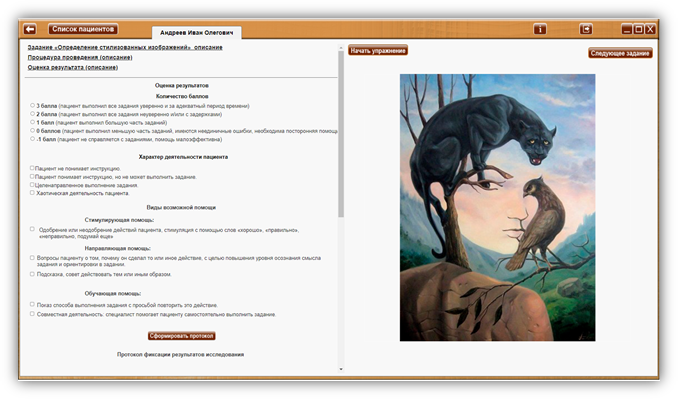
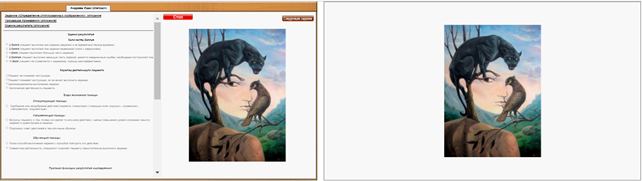

7.1.2. Упражнение «Определение стилизованных изображений»
Упражнение «Определение стилизованных изображений» (описание)
· Название упражнения: «Определение стилизованных изображений»
· Источник описания: Программы восстановления речевого мышления у больных с последствиями инсульта// Учебное пособие /М.М. Щербакова, С.В. Котов. М.: МОНИКИ, 2014.
· Цель: преодоление нарушений зрительного гнозиса.
· Стимульный материал: 30 стилизованных изображений.
Процедура проведения (описание)
Подробную информацию по выполнению смотреть в руководстве пользователя.
Процедура: предлагаем пациенту посмотреть на стилизованный рисунок и назвать его.
Инструкция: «Назовите эту картинку» (показываем одну картинку). «Опишите ее».
Оценка результата (описание)
3 балла (пациент выполнил все задания уверенно и за адекватный период времени).
2 балла (пациент выполнил все задания неуверенно и/или с задержками).
1 балл (пациент выполнил большую часть заданий).
0 баллов (пациент выполнил меньшую часть заданий, имеются неединичные ошибки, необходима посторонняя помощь).
-1 балл (пациент не справляется с заданиями, помощь малоэффективна).
Оценка результатов
Количество баллов:
o 3 балла (пациент выполнил все задания уверенно и за адекватный период времени).
o 2 балла (пациент выполнил все задания неуверенно и/или с задержками).
o 1 балл (пациент выполнил большую часть заданий).
o 0 баллов (пациент выполнил меньшую часть заданий, имеются неединичные ошибки, необходима посторонняя помощь).
o -1 балл (пациент не справляется с заданиями, помощь малоэффективна).
Характер деятельности пациента:
Пациент не понимает инструкцию.
Пациент понимает инструкцию, но не может выполнить задание.
Целенаправленное выполнение задания.
Хаотическая деятельность пациента.
Виды возможной помощи:
Стимулирующая помощь:
� Одобрение или неодобрение действий пациента, стимуляция с помощью слов «хорошо», «правильно», «неправильно».
Направляющая помощь:
� Вопросы к пациенту о том, почему он сделал то или иное действие, с целью повышения уровня осознания смысла задания и ориентировки в задании.
� Подсказка, совет действовать тем или иным образом.
Обучающая помощь:
� Показ способа выполнения задания с просьбой повторить это действие.
� Совместная деятельность: специалист помогает пациенту самостоятельно выполнить задание.

Протокол фиксации результатов
ФИО: ____________________ Дата рождения: __________
|
Упражнение |
Определение стилизованных изображений |
||
|
Цель: |
Преодоление нарушений зрительного гнозиса |
||
|
Дата / специалист |
|
||
|
Результат: баллы (макс 3) |
|
||
|
Примечание / коментарий |
|
||
|
Процесс выполнения упражнения |
|||
|
Характер деятельности |
Виды помощи |
Бал. |
|
|
|
|
|
|
Логика заполнения протокола
Заполняется автоматически
Имя специалиста – ФИО, привязанное к логину, который использовался при входе в программу.
Дата – дата и время прохождения упражнения в формате дд.мм.гггг. чч:мм.
Результат: баллы (макс 3) - кол-во баллов дублируется из ячейки «Бал».
Ячейки «Характер деятельности», «Виды помощи» заполняются в зависимости от выбора специалистом соответствующих пунктов в разделе «Оценка результатов» либо самостоятельно.
Бал. – количество баллов, заполняется в зависимости от выбора специалистом соответствующего пункта в разделе «Оценка результатов» либо самостоятельно.
Остальные ячейки заполняются (правятся) специалистом самостоятельно.
Дополнительные элементы управления
Кнопка «Следующее задание» - для выбора задания и/или для перехода к следующему заданию.
Выполнение упражнения

Выбрать задание при помощи кнопки «Следующее задание» и нажать кнопку «Начать упражнение». На обоих экранах отображается картинка – задание.
Экран специалиста Экран пациента

Выполнить задание согласно пункту «Процедура проведения». Предлагаем пациенту посмотреть на стилизованный рисунок и назвать его. Инструкция: «Назовите эту картинку». «Опишите ее».
Для перехода к следующему упражнению воспользуйтесь кнопкой «Следующее задание».
По окончании упражнения (после выполнения нужного количества заданий данного упражнения) специалист нажимает кнопку «Стоп» (или нажать клавишу «пробел» (space) на клавиатуре), для оценки результата по выполненному упражнению. Произвести оценку результата, выбрав количество баллов. При необходимости выбрать характер деятельности, виды возможной помощи, и нажать кнопку «Сформировать протокол». Если требуется, заполнить оставшиеся ячейки протокола.